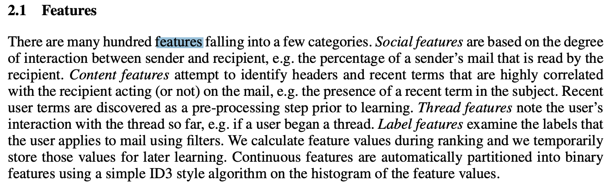

Lecture 3: Feature engineering#
UBC Master of Data Science program, 2022-23
Instructor: Varada Kolhatkar
Imports and LO#
Imports#
import os
import sys
sys.path.append("code/.")
import matplotlib.pyplot as plt
%matplotlib inline
import mglearn
import numpy as np
import numpy.random as npr
import pandas as pd
from plotting_functions import *
from sklearn.dummy import DummyClassifier, DummyRegressor
from sklearn.impute import SimpleImputer
from sklearn.linear_model import LinearRegression, LogisticRegression, Ridge, RidgeCV
from sklearn.metrics import make_scorer, mean_squared_error, r2_score
from sklearn.model_selection import cross_val_score, cross_validate, train_test_split
from sklearn.pipeline import Pipeline, make_pipeline
from sklearn.preprocessing import OneHotEncoder, OrdinalEncoder, StandardScaler
from sklearn.svm import SVC
Learning outcomes#
From this lecture, students are expected to be able to:
Explain the importance of the quality of data.
Explain the importance of feature engineering when building machine learning models.
Explain the “column of ones” trick.
Explain the concept of polynomial feature transformations.
Apply linear models to non-linear datasets using polynomial features.
Explain the idea of feature crosses.
Identify when is it appropriate to apply discretization to numeric features.
Carry out preliminary feature engineering on text data using
spaCyandnltk.
Feature engineering: Motivation#
❓❓ Questions for you#
iClicker Exercise 3.1#
iClicker cloud join link: https://join.iclicker.com/C0P55
Select the most accurate option below.
Suppose you are working on a machine learning project. If you have to prioritize one of the following in your project which of the following would it be?
(A) The quality and size of the data
(B) Most recent deep neural network model
(C) Most recent optimization algorithm
V’s answers: (A)
Garbage in, garbage out.#
Model building is interesting. But in your machine learning projects, you’ll be spending more than half of your time on data preparation, feature engineering, and transformations.
The quality of the data is important. Your model is only as good as your data.
Activity: How can you measure quality of the data? (~3 mins)#
Write some attributes of good- and bad-quality data in this Google Document.
What is feature engineering?#
Feature engineering is the process of determining which features might be useful in the model building and creating those features by transforming the given data or extracting them using alternative sources.
In 571 we talked about hyperparameter tuning, which is one way to get better model performance.
Another way is by changing the input representation.
Better representation: more flexibility, higher score, we can get by with simple and more interpretable models.
If your features, i.e., representation is bad, whatever fancier model you build is not going to help.
Some quotes on feature engineering#
A quote by Pedro Domingos A Few Useful Things to Know About Machine Learning
... At the end of the day, some machine learning projects succeed and some fail. What makes the difference? Easily the most important factor is the features used.
A quote by Andrew Ng, Machine Learning and AI via Brain simulations
Coming up with features is difficult, time-consuming, requires expert knowledge. "Applied machine learning" is basically feature engineering.
Better features usually help more than a better model.#
Good features would ideally:
capture most important aspects of the problem
allow learning with few examples
generalize to new scenarios.
There is a trade-off between simple and expressive features:
With simple features overfitting risk is low, but scores might be low.
With complicated features scores can be high, but so is overfitting risk.
The best features may be dependent on the model you use.#
Examples:
For counting-based methods like decision trees separate relevant groups of variable values
Discretization makes sense
For distance-based methods like KNN, we want different class labels to be “far”.
Standardization
For regression-based methods like linear regression, we want targets to have a linear dependency on features.
Domain-specific transformations#
In some domains there are natural transformations to do:
Spectrograms (sound data)
Wavelets (image data)
Convolutions

In this lecture we’ll talk about the following:
Polynomial features (change of basis)
Feature engineering demos
numeric data
text data
Polynomial feature transformations for non-linear regression#
Linear regression prediction (recap)#
Interested in predicting a scalar valued target (e.g., housing price)
In DSCI 571, we talked about how to make predictions \(\hat{y_i}\), which is the linear function of feature vector \(x_i\) and weight vector \(w\).
\(\hat{y_i} \rightarrow\) prediction for example \(x_i\)
\(w \rightarrow\) weight vector
\(w_0 \rightarrow\) bias term
\(x_{ij} \rightarrow\) \(j^{th}\) component of the feature vector \(x_i\)
\(w_0, w_1, \ldots, w_d\) together are the parameters
Matrix vector notation#
The notation above is component-wise notation.
We also want to be able to write it as below so that we don’t have to write the summation all the time.
In matrix form, the expression for a linear model is:
Where
\(\hat{y} \rightarrow\) prediction vector for feature matrix \(X\)
\(w \rightarrow\) weight vector
This notation is matrix vector notation. What happened to the bias term?
For simplicity, we rename the bias term as \(w_0\) and introduce a dummy feature whose value is always 1.
So \(w_0 + w_1x_{i1} + \dots + w_dx_{id}\) becomes \(w_0x_{i0} + w_1x_{i1} + \dots + w_nx_{id}\), where \(x_{i0}\) is always 1.
This is often referred to as “column of ones” trick.
An example of column of ones notation#
Suppose \(X\) has only one feature: $\(X = \begin{bmatrix}0.86 \\ 0.02 \\ -0.42 \end{bmatrix}\)$
Make a new matrix \(Z\) with an extra feature whose value is always 1. $\(Z = \begin{bmatrix}1 & 0.86\\ 1 & 0.02 \\ 1 & -0.42\\ \end{bmatrix}\)$
So far we assumed that we magically learned the parameters \(w\).
The most common way to learn these parameters in linear regression is by minimizing the quadratic cost between the actual target \(y\) and the model predictions \(\hat{y}\).
This is called ordinary least squares, the most commonly used loss function or cost function for linear regression.
More on this later.
Limitations of linear regression#
Linear models are fast and scalable.
But they might seem rather limited, especially in low-dimensional spaces because they only learn lines, planes, or hyperplanes.
What if the true relationship between the target and the features is non-linear?
Can we still use ordinary least squares to fit non-linear data?
One way to make linear models more flexible is using feature mappings or transformations!
Polynomial transformations#
Let’s consider this synthetic toy data with only one feature.
from matplotlib.pyplot import figure
np.random.seed(10)
n = 20
X = np.linspace(-3, 3, n)
y = X**2 + npr.randn(n)
X_toy = X[:, np.newaxis]
y_toy = y[:, np.newaxis]
pd.DataFrame(np.hstack([X_toy, y_toy]), columns=["feat1", "y"])
| feat1 | y | |
|---|---|---|
| 0 | -3.000000 | 10.331587 |
| 1 | -2.684211 | 7.920265 |
| 2 | -2.368421 | 4.064018 |
| 3 | -2.052632 | 4.204913 |
| 4 | -1.736842 | 3.637956 |
| 5 | -1.421053 | 1.299305 |
| 6 | -1.105263 | 1.487118 |
| 7 | -0.789474 | 0.731817 |
| 8 | -0.473684 | 0.228668 |
| 9 | -0.157895 | -0.149669 |
| 10 | 0.157895 | 0.457957 |
| 11 | 0.473684 | 1.427414 |
| 12 | 0.789474 | -0.341797 |
| 13 | 1.105263 | 2.249881 |
| 14 | 1.421053 | 2.248021 |
| 15 | 1.736842 | 3.461758 |
| 16 | 2.052632 | 3.076694 |
| 17 | 2.368421 | 5.744555 |
| 18 | 2.684211 | 8.689523 |
| 19 | 3.000000 | 7.920195 |
Let’s plot the data
figure(figsize=(6, 4), dpi=80)
plt.scatter(X_toy[:, 0], y_toy, s=50, edgecolors=(0, 0, 0))
plt.xlabel("feat1")
plt.ylabel("y");
Can simple linear regression fit this data?
Let’s try it out.
Right now we are focussing on creating a better fit on the training data. So we are skipping splitting the data for the demonstration purpose.
Also, for simplicity, we are using
LinearRegression, which doesn’t have any hyperparameter controlling the complexity of the model.
# Fit a regression line.
lr = LinearRegression()
lr.fit(X_toy, y_toy)
LinearRegression()In a Jupyter environment, please rerun this cell to show the HTML representation or trust the notebook.
On GitHub, the HTML representation is unable to render, please try loading this page with nbviewer.org.
LinearRegression()
figure(figsize=(6, 4), dpi=80)
plt.scatter(X_toy[:, 0], y, s=50, edgecolors=(0, 0, 0))
preds = lr.predict(X_toy)
plt.xlabel("feat1")
plt.ylabel("y")
plt.plot(X_toy, preds, color="red", linewidth=2);
As expected, the regression line is unable to capture the shape of the data.
The model is underfit.
The score on the training data is close to a dummy model.
lr.score(X_toy, y_toy)
0.0002572570295679144
DummyRegressor().fit(X_toy, y_toy).score(X_toy, y_toy)
0.0
Adding quadratic features#
It looks like a quadratic function would be more suitable for this dataset.
A linear model on its own cannot fit a quadratic function. But what if we augment the data with a new quadratic feature?
Let’s try it out.
# add a squared feature
X_sq = np.hstack([X_toy, X_toy**2])
pd.DataFrame(X_sq, columns=["feat1", "feat1^2"])
| feat1 | feat1^2 | |
|---|---|---|
| 0 | -3.000000 | 9.000000 |
| 1 | -2.684211 | 7.204986 |
| 2 | -2.368421 | 5.609418 |
| 3 | -2.052632 | 4.213296 |
| 4 | -1.736842 | 3.016620 |
| 5 | -1.421053 | 2.019391 |
| 6 | -1.105263 | 1.221607 |
| 7 | -0.789474 | 0.623269 |
| 8 | -0.473684 | 0.224377 |
| 9 | -0.157895 | 0.024931 |
| 10 | 0.157895 | 0.024931 |
| 11 | 0.473684 | 0.224377 |
| 12 | 0.789474 | 0.623269 |
| 13 | 1.105263 | 1.221607 |
| 14 | 1.421053 | 2.019391 |
| 15 | 1.736842 | 3.016620 |
| 16 | 2.052632 | 4.213296 |
| 17 | 2.368421 | 5.609418 |
| 18 | 2.684211 | 7.204986 |
| 19 | 3.000000 | 9.000000 |
Let’s plot our augmented data along with y.
plot_3d_reg(X_sq, y) # user-defined function from plotting_functions.py
plot_3d_reg(X_sq, y, surface=True)
A linear model fits well on this augmented data now!!
This is a common way to make linear models more flexible by adding more degrees of freedom.
The model is still linear, i.e., it’s still learning the coefficients for each feature. But the feature space is augmented now.
lr = LinearRegression()
lr.fit(X_sq, y_toy) # Linear regression with augmented data
lr.score(X_sq, y_toy) # The scores are much better now
0.9270602202765702
pd.DataFrame(
lr.coef_.transpose(), index=["feat1", "feat1^2"], columns=["Feature coefficient"]
)
| Feature coefficient | |
|---|---|
| feat1 | -0.027196 |
| feat1^2 | 1.006051 |
According to the model, our newly created feat1^2 feature is the most important feature for prediction; the coefficient of the squared feature has the biggest magnitude.
The idea of transforming features and creating new features is referred to as change of basis.
Polynomial regression in sklearn#
In
sklearnwe can add polynomial features using sklearn’s PolynomialFeaturesUsing this we can generate a new feature matrix consisting of all polynomial combinations of the features with degree less than or equal to a specified degree.
PolynomialFeaturesis a transformer.For one-dimensional feature vector
[a], the augmented features with degree 2 polynomial would be: \([1, a, a^2]\).For two-dimensional feature vector
[a, b], the augmented features with degree 2 polynomial would be: \([1, a, b, a^2, ab, b^2]\).
Let’s try polynomial features with degree 2 and visualize augmented features.
from sklearn.preprocessing import PolynomialFeatures
deg = 2
poly_feats = PolynomialFeatures(degree=deg)
X_enc = poly_feats.fit_transform(X_toy)
pd.DataFrame(X_enc, columns=poly_feats.get_feature_names_out()).head()
| 1 | x0 | x0^2 | |
|---|---|---|---|
| 0 | 1.0 | -3.000000 | 9.000000 |
| 1 | 1.0 | -2.684211 | 7.204986 |
| 2 | 1.0 | -2.368421 | 5.609418 |
| 3 | 1.0 | -2.052632 | 4.213296 |
| 4 | 1.0 | -1.736842 | 3.016620 |
Let’s fit linear regression on the transformed data.
lr_poly = LinearRegression()
lr_poly.fit(X_enc, y_toy)
preds = lr_poly.predict(X_enc)
lr_poly.score(X_enc, y_toy)
0.9270602202765702
The model is not underfit anymore. The training score is pretty good!
Let’s examine the coefficients.
We can also plot the prediction from the augmented 3-D space in the original 2-D space.
figure(figsize=(6, 4), dpi=80)
plt.scatter(X_toy[:, 0], y_toy, s=50, edgecolors=(0, 0, 0))
plt.plot(X, preds, color="green", linewidth=1);
Now the fit is much better compared to linear regression on the original data!
What’s happening here?
The actual linear regression model is fit in the augmented space and making the prediction in that augmented space.
Let’s try degree=20 polynomial.
deg = 20
poly_feats = PolynomialFeatures(degree=deg)
X_enc = poly_feats.fit_transform(X_toy)
pd.DataFrame(X_enc, columns=poly_feats.get_feature_names_out()).head(10)
| 1 | x0 | x0^2 | x0^3 | x0^4 | x0^5 | x0^6 | x0^7 | x0^8 | x0^9 | ... | x0^11 | x0^12 | x0^13 | x0^14 | x0^15 | x0^16 | x0^17 | x0^18 | x0^19 | x0^20 | |
|---|---|---|---|---|---|---|---|---|---|---|---|---|---|---|---|---|---|---|---|---|---|
| 0 | 1.0 | -3.000000 | 9.000000 | -27.000000 | 81.000000 | -243.000000 | 729.000000 | -2187.000000 | 6.561000e+03 | -1.968300e+04 | ... | -1.771470e+05 | 5.314410e+05 | -1.594323e+06 | 4.782969e+06 | -1.434891e+07 | 4.304672e+07 | -1.291402e+08 | 3.874205e+08 | -1.162261e+09 | 3.486784e+09 |
| 1 | 1.0 | -2.684211 | 7.204986 | -19.339700 | 51.911825 | -139.342268 | 374.023983 | -1003.959113 | 2.694838e+03 | -7.233512e+03 | ... | -5.211735e+04 | 1.398939e+05 | -3.755048e+05 | 1.007934e+06 | -2.705507e+06 | 7.262150e+06 | -1.949314e+07 | 5.232369e+07 | -1.404478e+08 | 3.769915e+08 |
| 2 | 1.0 | -2.368421 | 5.609418 | -13.285464 | 31.465573 | -74.523727 | 176.503563 | -418.034755 | 9.900823e+02 | -2.344932e+03 | ... | -1.315370e+04 | 3.115351e+04 | -7.378462e+04 | 1.747531e+05 | -4.138888e+05 | 9.802630e+05 | -2.321675e+06 | 5.498705e+06 | -1.302325e+07 | 3.084454e+07 |
| 3 | 1.0 | -2.052632 | 4.213296 | -8.648345 | 17.751867 | -36.438042 | 74.793875 | -153.524271 | 3.151288e+02 | -6.468433e+02 | ... | -2.725342e+03 | 5.594124e+03 | -1.148268e+04 | 2.356970e+04 | -4.837991e+04 | 9.930614e+04 | -2.038389e+05 | 4.184062e+05 | -8.588338e+05 | 1.762869e+06 |
| 4 | 1.0 | -1.736842 | 3.016620 | -5.239393 | 9.099999 | -15.805262 | 27.451244 | -47.678477 | 8.280999e+01 | -1.438279e+02 | ... | -4.338741e+02 | 7.535708e+02 | -1.308834e+03 | 2.273237e+03 | -3.948254e+03 | 6.857494e+03 | -1.191038e+04 | 2.068646e+04 | -3.592911e+04 | 6.240319e+04 |
| 5 | 1.0 | -1.421053 | 2.019391 | -2.869660 | 4.077938 | -5.794965 | 8.234950 | -11.702298 | 1.662958e+01 | -2.363151e+01 | ... | -4.772125e+01 | 6.781441e+01 | -9.636784e+01 | 1.369438e+02 | -1.946043e+02 | 2.765430e+02 | -3.929821e+02 | 5.584483e+02 | -7.935844e+02 | 1.127725e+03 |
| 6 | 1.0 | -1.105263 | 1.221607 | -1.350197 | 1.492323 | -1.649409 | 1.823031 | -2.014930 | 2.227027e+00 | -2.461451e+00 | ... | -3.006925e+00 | 3.323444e+00 | -3.673280e+00 | 4.059941e+00 | -4.487303e+00 | 4.959651e+00 | -5.481719e+00 | 6.058742e+00 | -6.696505e+00 | 7.401400e+00 |
| 7 | 1.0 | -0.789474 | 0.623269 | -0.492054 | 0.388464 | -0.306682 | 0.242117 | -0.191145 | 1.509042e-01 | -1.191349e-01 | ... | -7.425304e-02 | 5.862082e-02 | -4.627960e-02 | 3.653652e-02 | -2.884462e-02 | 2.277207e-02 | -1.797795e-02 | 1.419312e-02 | -1.120509e-02 | 8.846127e-03 |
| 8 | 1.0 | -0.473684 | 0.224377 | -0.106284 | 0.050345 | -0.023848 | 0.011296 | -0.005351 | 2.534611e-03 | -1.200605e-03 | ... | -2.693878e-04 | 1.276048e-04 | -6.044436e-05 | 2.863154e-05 | -1.356231e-05 | 6.424252e-06 | -3.043067e-06 | 1.441453e-06 | -6.827933e-07 | 3.234284e-07 |
| 9 | 1.0 | -0.157895 | 0.024931 | -0.003936 | 0.000622 | -0.000098 | 0.000015 | -0.000002 | 3.863147e-07 | -6.099706e-08 | ... | -1.520702e-09 | 2.401109e-10 | -3.791224e-11 | 5.986144e-12 | -9.451806e-13 | 1.492390e-13 | -2.356406e-14 | 3.720641e-15 | -5.874696e-16 | 9.275836e-17 |
10 rows × 21 columns
lr_poly = LinearRegression()
lr_poly.fit(X_enc, y)
preds = lr_poly.predict(X_enc)
figure(figsize=(6, 4), dpi=80)
plt.scatter(X_toy[:, 0], y_toy, s=50, edgecolors=(0, 0, 0))
plt.plot(X_toy, preds, color="green", linewidth=1);
It seems like we are overfitting now.
The model is trying to go through every training point.
The model is likely to overfit on unseen data.
You can pick the degree of polynomial using hyperparameter optimization.
Interim summary#
We can make linear models more flexible by augmenting the feature space.
One way to do it is by applying polynomial transformations.
Example: Suppose \(X\) has only one feature, say \(f_1\)$
We can add a new feature \(f_1^2\)?
Our \(Z\) will have three features \(f_0\), \(f_1\), \(f_1^2\) with polynomial with degree 2. $\(Z = \begin{bmatrix}1 & 0.86 & 0.74\\ 1 & 0.02 & 0.0004\\ 1 & -0.42 & 0.18\\ \end{bmatrix}\)$
\(Z\) \(\rightarrow\) augmented dataset with quadratic features
fit: We fit using \(Z\) and learn weights \(v\).predict: When we predict, we need to apply the same transformations on the test example and add these features in the test example and predict using learned weights \(v\).
\(\hat{y}\) is still a linear function of \(v\) and \(Z\).
PolynomialFeatures with sklearn pipelines#
degree = 20
pipe_poly = make_pipeline(PolynomialFeatures(degree=degree), LinearRegression())
pipe_poly.fit(X_toy, y_toy)
preds = pipe_poly.predict(X_toy)
figure(figsize=(6, 4), dpi=80)
plt.scatter(X_toy[:, 0], y_toy, s=50, edgecolors=(0, 0, 0))
plt.plot(X, preds, color="green", linewidth=1);
The model has learned coefficients for the transformed features.
pd.DataFrame(
pipe_poly.named_steps["linearregression"].coef_.transpose(),
index=pipe_poly.named_steps["polynomialfeatures"].get_feature_names_out(),
columns=["Feature coefficients"],
).sort_values("Feature coefficients", ascending=False)
| Feature coefficients | |
|---|---|
| x0^7 | 84.271533 |
| x0^11 | 31.398818 |
| x0^6 | 29.056499 |
| x0^12 | 16.435514 |
| x0^2 | 9.626527 |
| x0^8 | 8.711761 |
| x0^3 | 3.763840 |
| x0 | 1.856515 |
| x0^15 | 1.138977 |
| x0^16 | 0.755986 |
| x0^19 | 0.002640 |
| x0^20 | 0.001922 |
| 1 | -0.000220 |
| x0^18 | -0.060286 |
| x0^17 | -0.085945 |
| x0^14 | -4.832276 |
| x0^13 | -7.941176 |
| x0^10 | -26.869921 |
| x0^4 | -31.828364 |
| x0^5 | -44.211552 |
| x0^9 | -70.499855 |
fig, axes = plt.subplots(2, 5, figsize=(20, 8))
degrees = np.arange(1, 20, 2)
for deg, ax in zip(degrees, axes.ravel()):
pipe_poly = make_pipeline(PolynomialFeatures(degree=deg), LinearRegression())
pipe_poly.fit(X_toy, y_toy)
preds = pipe_poly.predict(X_toy)
ax.scatter(X_toy[:, 0], y_toy, s=50, edgecolors=(0, 0, 0))
ax.plot(X_toy, preds, color="green", linewidth=1.5)
title = "degree={}".format(deg)
ax.set_title(title)
Classification setting: Non-linearly separable data#
Let’s consider this non-linearly separable 1-D data.
# Consider this one-dimensional classification dataset
n = 20
d = 1
np.random.seed(10)
X = np.random.randn(n, d)
y = np.sum(X**2, axis=1) < 0.4
figure(figsize=(6, 4), dpi=80)
# plt.scatter(X[:, 0], np.zeros_like(X), c=y, s=50, edgecolors=(0, 0, 0));
mglearn.discrete_scatter(X[:, 0], np.zeros_like(X), y)
plt.xlabel("Feature0")
# plt.legend();
Text(0.5, 0, 'Feature0')
Can we use a linear classifier on this dataset?
linear_svm = SVC(kernel="linear", C=100)
linear_svm.fit(X, y)
print("Training accuracy", linear_svm.score(X, y))
Training accuracy 0.75
What if we augmented this data with polynomial with degree=2 feature?
X[:5]
array([[ 1.3315865 ],
[ 0.71527897],
[-1.54540029],
[-0.00838385],
[ 0.62133597]])
poly = PolynomialFeatures(
2, include_bias=False
) # Excluding the bias term for simplicity
X_transformed = poly.fit_transform(X)
X_transformed[0:5]
array([[ 1.33158650e+00, 1.77312262e+00],
[ 7.15278974e-01, 5.11624011e-01],
[-1.54540029e+00, 2.38826206e+00],
[-8.38384993e-03, 7.02889396e-05],
[ 6.21335974e-01, 3.86058392e-01]])
linear_svm = SVC(kernel="linear", C=100)
linear_svm.fit(X_transformed, y)
print("Training accuracy", linear_svm.score(X_transformed, y))
plot_orig_transformed_svc(linear_svm, X, X_transformed, y)
Training accuracy 1.0
The data is linearly separable in this new feature space!!
(Optional) Another example with two features#
import mglearn
from sklearn.datasets import make_blobs
X, y = make_blobs(centers=4, random_state=8)
y = y % 2
figure(figsize=(6, 4), dpi=80)
mglearn.discrete_scatter(X[:, 0], X[:, 1], y)
plt.xlabel("Feature 0")
plt.ylabel("Feature 1");
from sklearn.svm import LinearSVC
linear_svm = LinearSVC().fit(X, y)
figure(figsize=(6, 4), dpi=80)
mglearn.plots.plot_2d_separator(linear_svm, X)
mglearn.discrete_scatter(X[:, 0], X[:, 1], y)
plt.xlabel("Feature 0")
plt.ylabel("Feature 1");
/Users/kvarada/opt/miniconda3/envs/573/lib/python3.10/site-packages/sklearn/svm/_base.py:1225: ConvergenceWarning: Liblinear failed to converge, increase the number of iterations.
warnings.warn(

# add square of the second feature
X_new = np.hstack([X, X[:, 1:] ** 2])
plot_mglearn_3d(X_new, y);
linear_svm_3d = LinearSVC().fit(X_new, y)
XX, YY = plot_svc_3d_decision_boundary(X_new, y, linear_svm_3d)
/Users/kvarada/opt/miniconda3/envs/573/lib/python3.10/site-packages/sklearn/svm/_base.py:1225: ConvergenceWarning: Liblinear failed to converge, increase the number of iterations.
warnings.warn(
What does this linear boundary in \(Z\)-space correspond to in the original (\(X\)) space?
figure(figsize=(6, 4), dpi=80)
plot_Z_space_boundary_in_X_space(linear_svm_3d, X, y, XX, YY)
It’s a parabola!
Another example with non-linearly separable data
from sklearn import datasets
figure(figsize=(6, 4), dpi=80)
X, y = datasets.make_circles(n_samples=200, noise=0.06, factor=0.4)
plt.scatter(X[:, 0], X[:, 1], s=50, c=y, cmap=plt.cm.Paired, edgecolors=(0, 0, 0));
lr_circ = LinearRegression()
lr_circ.fit(X, y).score(X, y)
0.00015933776258525434
lr_circ_pipe = make_pipeline(PolynomialFeatures(degree=2), LinearRegression())
lr_circ_pipe.fit(X, y).score(X, y)
0.9669328201796121
Feature interactions and feature crosses#
A feature cross is a synthetic feature formed by multiplying or crossing two or more features.
Example: Is the following dataset (XOR function) linearly separable?
$\(x_1\)$ |
$\(x_2\)$ |
target |
|---|---|---|
1 |
1 |
0 |
-1 |
1 |
1 |
1 |
-1 |
1 |
-1 |
-1 |
0 |
For XOR like problems, if we create a feature cross \(x1x2\), the data becomes linearly separable.
$\(x_1\)$ |
$\(x_2\)$ |
$\(x_1x_2\)$ |
target |
|---|---|---|---|
1 |
1 |
1 |
0 |
-1 |
1 |
-1 |
1 |
1 |
-1 |
-1 |
1 |
-1 |
-1 |
1 |
0 |
Let’s look at an example with more data points.
xx, yy = np.meshgrid(np.linspace(-3, 3, 50), np.linspace(-3, 3, 50))
rng = np.random.RandomState(0)
X_xor = rng.randn(200, 2)
y_xor = np.logical_xor(X_xor[:, 0] > 0, X_xor[:, 1] > 0)
figure(figsize=(6, 4), dpi=80)
plt.scatter(
X_xor[:, 0], X_xor[:, 1], s=30, c=y_xor, cmap=plt.cm.Paired, edgecolors=(0, 0, 0)
);
LogisticRegression().fit(X_xor, y_xor).score(X_xor, y_xor)
0.535
pipe_xor = make_pipeline(
PolynomialFeatures(interaction_only=True), LogisticRegression()
)
pipe_xor.fit(X_xor, y_xor)
pipe_xor.score(X_xor, y_xor)
0.995
feature_names = (
pipe_xor.named_steps["polynomialfeatures"].get_feature_names_out().tolist()
)
pd.DataFrame(
pipe_xor.named_steps["logisticregression"].coef_.transpose(),
index=feature_names,
columns=["Feature coefficient"],
)
| Feature coefficient | |
|---|---|
| 1 | -0.001828 |
| x0 | -0.028418 |
| x1 | 0.130472 |
| x0 x1 | -5.085936 |
The interaction feature has the biggest coefficient!
Feature crosses for one-hot encoded features#
You can think of feature crosses of one-hot-features as logical conjunctions
Suppose you want to predict whether you will find parking or not based on two features:
area (possible categories: UBC campus and Rogers Arena)
time of the day (possible categories: 9am and 7pm)
A feature cross in this case would create four new features:
UBC campus and 9am
UBC campus and 7pm
Rogers Arena and 9am
Rogers Arena and 7pm.
The features UBC campus and 9am on their own are not that informative but the newly created feature UBC campus and 9am or Rogers Arena and 7pm would be quite informative.
Coming up with the right combination of features requires some domain knowledge or careful examination of the data.
There is no easy way to support feature crosses in sklearn.
Questions to consider#
How do we know what degree of polynomial to use?
Can we plot data and see how does it look like so that we can pick polynomial with the appropriate degree?
Plotting cannot take us much further
Not possible to visualize high dimensional data
Can we consider one feature at a time?
Hopeless when features interact with each other
There is a possibility to draw misleading conclusions when you are only looking at one feature at a time.
Hyperparameter optimization
Can be potentially very slow.
Problems with polynomial basis#
Let \(d\) be the original number of features and \(p\) be the degree of polynomial.
In general, we have roughly \(\mathcal{O}(d^p)\) feature combinations.
For example, for \(d = 1000\), and \(p = 3\), we would have around a billion new feature combinations!
This is problematic!
How can we do this efficiently?#
Kernel trick
Computationally efficient approach to map features
Calculate these relationships in higher dimensional space without actually carrying out the transformation.
Overall, saying something is a “kernel method” correspond to this idea of implicitly calculating relationships in data in higher dimensional space.
Then the different transformations have different names like “polynomial kernel” or “RBF kernel”
For details see this video from CPSC 340.
More on RBF kernel later.
(Optional) Recall RBF Kernel#
Hard to visualize but you can think of this as a weighted nearest-neighbour.
During prediction, the closest examples have a lot of influence on how we classify the new example compared to the ones further away.
In general, for both regression/classification, you can think of RBF kernel as “smooth KNN”.
During test time, each training example gets to “vote” on the label of the test point and the amount of vote the \(n^{th}\) training example gets is proportional to the the distance between the test point and itself.
RBFs#
What is a radial basis function (RBF)?
A set of non-parametric bases that depend on distances to training points.
Non-parametric because size of basis (number of features) grows with \(n\).
Model gets more complicated as you get more data.
Example: RBFs#
Similar to polynomial basis, we transform \(X\) to \(Z\).
Consider \(X_{train}\) with three examples: \(x_1\), \(x_2\), and \(x_3\) and 2 features sand \(X_{test}\) with two examples: \(\tilde{x_1}\) and \(\tilde{x_2}\)
We create \(n\) features.
Gaussian Radial Basis Functions (Gaussian RBFs)#
Most common \(g\) is Gaussian RBF: $\(g(\varepsilon)=\exp\left(-\frac{\varepsilon^2}{2\sigma^2}\right)\)$

So in our case: $\(g(x_i - x_j)=\exp\left(-\frac{\lVert x_i - x_j\rVert^2}{2\sigma^2}\right)\)$
\(\sigma\) is a hyperparameter that controls the width of the bumps.
We can fit least squares with different \(\sigma\) values
Gaussian RBFs (non-parametric basis)#

How many bumps should we use?
We use \(n\) bumps (non-parametric basis)
Where should the bumps be centered?
Each bump is centered on one training example \(x_i\).
How high should the bumps go?
Fitting regression weights \(w\) gives us the heights (and signs).
How wide should the bumps be?
The width is a hyper-parameter (narrow bumps = complicated model)
Enough bumps can approximate any continuous function to arbitrary precision.
But with \(n\) data points RBFs have \(n\) features
How do we avoid overfitting with this huge number of features?
We regularize \(w\) (coming up in two weeks) and use validation error to choose \(\sigma\) and \(\lambda\).
Interpretation of gamma in SVM RBF#
gammacontrols the complexity (fundamental trade-off).larger
gamma\(\rightarrow\) more complexsmaller
gamma\(\rightarrow\) less complex
The
gammahyperparameter in SVC is related to \(\sigma\) in Gaussian RBF.You can think of
gammaas the inverse width of the “bumps”Larger
gammameans narrower peaks.Narrower peaks means more complex model.
Constructing Gaussian RBF with \(X\) and \(\sigma\)#
Z = zeros(n,n)
for i1 in 1:n
for i2 in 1:n
Z(i1,i2) = exp(-(norm(X[i1:] - X[i2:])**2)/(2 * sigma**2)
Gaussian RBFs: Prediction#
Given a test example \(\tilde{x_i}\):
\[\hat{y_i} = w_1 \exp\left(\frac{-\lVert \tilde{x_i} - x_1\rVert^2}{2\sigma^2}\right) + w_2 \exp\left(\frac{-\lVert \tilde{x_i} - x_2\rVert^2}{2\sigma^2}\right) + \dots + w_n \exp\left(\frac{-\lVert \tilde{x_i} - x_n\rVert^2}{2\sigma^2}\right) = \sum_{j = 1}^n w_j \exp\left(\frac{-\lVert \tilde{x_i} - x_j\rVert^2}{2\sigma^2}\right) \]Expensive at test time: needs distance to all training examples.
RBF with regulariation and optimized \(sigma\) and \(\lambda\)#
A model that is hard to beat:
RBF basis with L2-regularization and cross-validation to choose \(\sigma\) and \(\lambda\).
Flexible non-parametric basis, magic of regularization, and tuning for test error
For each value of \(\lambda\) and \(sigma\)
Compute \(Z\) on training data
Compute best weights \(V\) using least squares
Compute \(\tilde{Z}\) on validation set (using train set distances)
Make predictions \(\hat{y} = \tilde{Z}v\)
Compute validation error
Using RBF with least squares: KernelRidge (optional)#
sklearn.kernel_ridge.KernelRidge(alpha=1, kernel=’linear’, gamma=None, degree=3, coef0=1, kernel_params=None)
Kernel ridge regression. Kernel ridge regression (KRR) combines ridge regression (linear least squares with l2-norm regularization) with the kernel trick. It thus learns a linear function in the space induced by the respective kernel and the data. For non-linear kernels, this corresponds to a non-linear function in the original space.
The form of the model learned by KRR is identical to support vector regression (SVR). However, different loss functions are used: KRR uses squared error loss while support vector regression uses epsilon-insensitive loss, both combined with l2 regularization. In contrast to SVR, fitting a KRR model can be done in closed-form and is typically faster for medium-sized datasets. On the other hand, the learned model is non-sparse and thus slower than SVR, which learns a sparse model for epsilon > 0, at prediction-time.
❓❓ Questions for you#
iClicker Exercise 3.2#
iClicker cloud join link: https://join.iclicker.com/C0P55
Select all of the following statements which are TRUE.
(A) Suppose we add quadratic features to dataset \(X\) and the augmented dataset is \(Z\). Fitting linear regression on \(Z\) would learn a linear function of \(Z\).
(B) The least squares loss function shown below is independent of the bias term (the \(y\) intercept).
(C) If you get the same validation error with polynomials of degrees \(d\) and \(d+4\), it is a better to pick the polynomial of degree \(d\).
(D) If you are given a large dataset with 1000 features, it’s a good idea to start simple and work with one or two features in order to verify your intuitions.
(E) Suppose you apply polynomial transformations with degree 3 polynomial during training. During prediction time on the test set, you must calculate degree three polynomial features of the given feature vector in order to get predictions.
V’s answers: (A), (C), (D), (E)
Break (5 min)#

Demo of feature engineering with numeric features#
Remember the California housing dataset we used in DSCI 571?
The prediction task is predicting
median_house_valuefor a given property.
housing_df = pd.read_csv("data/california_housing.csv")
housing_df.head()
| longitude | latitude | housing_median_age | total_rooms | total_bedrooms | population | households | median_income | median_house_value | ocean_proximity | |
|---|---|---|---|---|---|---|---|---|---|---|
| 0 | -122.23 | 37.88 | 41.0 | 880.0 | 129.0 | 322.0 | 126.0 | 8.3252 | 452600.0 | NEAR BAY |
| 1 | -122.22 | 37.86 | 21.0 | 7099.0 | 1106.0 | 2401.0 | 1138.0 | 8.3014 | 358500.0 | NEAR BAY |
| 2 | -122.24 | 37.85 | 52.0 | 1467.0 | 190.0 | 496.0 | 177.0 | 7.2574 | 352100.0 | NEAR BAY |
| 3 | -122.25 | 37.85 | 52.0 | 1274.0 | 235.0 | 558.0 | 219.0 | 5.6431 | 341300.0 | NEAR BAY |
| 4 | -122.25 | 37.85 | 52.0 | 1627.0 | 280.0 | 565.0 | 259.0 | 3.8462 | 342200.0 | NEAR BAY |
housing_df.info()
<class 'pandas.core.frame.DataFrame'>
RangeIndex: 20640 entries, 0 to 20639
Data columns (total 10 columns):
# Column Non-Null Count Dtype
--- ------ -------------- -----
0 longitude 20640 non-null float64
1 latitude 20640 non-null float64
2 housing_median_age 20640 non-null float64
3 total_rooms 20640 non-null float64
4 total_bedrooms 20433 non-null float64
5 population 20640 non-null float64
6 households 20640 non-null float64
7 median_income 20640 non-null float64
8 median_house_value 20640 non-null float64
9 ocean_proximity 20640 non-null object
dtypes: float64(9), object(1)
memory usage: 1.6+ MB
Suppose we decide to train ridge model on this dataset.
What would happen if you train a model without applying any transformation on the categorical features ocean_proximity?
Error!! A linear model requires all features in a numeric form.
What would happen if we apply OHE on
ocean_proximitybut we do not scale the features?No syntax error. But the model results are likely to be poor.
Do we need to apply any other transformations on this data?
In this section, we will look into some common ways to do feature engineering for numeric or categorical features.
train_df, test_df = train_test_split(housing_df, test_size=0.2, random_state=123)
We have total rooms and the number of households in the neighbourhood. How about creating rooms_per_household feature using this information?
train_df = train_df.assign(
rooms_per_household=train_df["total_rooms"] / train_df["households"]
)
test_df = test_df.assign(
rooms_per_household=test_df["total_rooms"] / test_df["households"]
)
train_df
| longitude | latitude | housing_median_age | total_rooms | total_bedrooms | population | households | median_income | median_house_value | ocean_proximity | rooms_per_household | |
|---|---|---|---|---|---|---|---|---|---|---|---|
| 9950 | -122.33 | 38.38 | 28.0 | 1020.0 | 169.0 | 504.0 | 164.0 | 4.5694 | 287500.0 | INLAND | 6.219512 |
| 3547 | -118.60 | 34.26 | 18.0 | 6154.0 | 1070.0 | 3010.0 | 1034.0 | 5.6392 | 271500.0 | <1H OCEAN | 5.951644 |
| 4448 | -118.21 | 34.07 | 47.0 | 1346.0 | 383.0 | 1452.0 | 371.0 | 1.7292 | 191700.0 | <1H OCEAN | 3.628032 |
| 6984 | -118.02 | 33.96 | 36.0 | 2071.0 | 398.0 | 988.0 | 404.0 | 4.6226 | 219700.0 | <1H OCEAN | 5.126238 |
| 4432 | -118.20 | 34.08 | 49.0 | 1320.0 | 309.0 | 1405.0 | 328.0 | 2.4375 | 114000.0 | <1H OCEAN | 4.024390 |
| ... | ... | ... | ... | ... | ... | ... | ... | ... | ... | ... | ... |
| 7763 | -118.10 | 33.91 | 36.0 | 726.0 | NaN | 490.0 | 130.0 | 3.6389 | 167600.0 | <1H OCEAN | 5.584615 |
| 15377 | -117.24 | 33.37 | 14.0 | 4687.0 | 793.0 | 2436.0 | 779.0 | 4.5391 | 180900.0 | <1H OCEAN | 6.016688 |
| 17730 | -121.76 | 37.33 | 5.0 | 4153.0 | 719.0 | 2435.0 | 697.0 | 5.6306 | 286200.0 | <1H OCEAN | 5.958393 |
| 15725 | -122.44 | 37.78 | 44.0 | 1545.0 | 334.0 | 561.0 | 326.0 | 3.8750 | 412500.0 | NEAR BAY | 4.739264 |
| 19966 | -119.08 | 36.21 | 20.0 | 1911.0 | 389.0 | 1241.0 | 348.0 | 2.5156 | 59300.0 | INLAND | 5.491379 |
16512 rows × 11 columns
Let’s start simple. Imagine that we only three features: longitude, latitude, and our newly created rooms_per_household feature.
X_train_housing = train_df[["latitude", "longitude", "rooms_per_household"]]
y_train_housing = train_df["median_house_value"]
from sklearn.compose import make_column_transformer
numeric_feats = ["latitude", "longitude", "rooms_per_household"]
preprocessor1 = make_column_transformer(
(make_pipeline(SimpleImputer(), StandardScaler()), numeric_feats)
)
lr_1 = make_pipeline(preprocessor1, Ridge())
pd.DataFrame(
cross_validate(lr_1, X_train_housing, y_train_housing, return_train_score=True)
)
| fit_time | score_time | test_score | train_score | |
|---|---|---|---|---|
| 0 | 0.005102 | 0.001189 | 0.280028 | 0.311769 |
| 1 | 0.002480 | 0.000848 | 0.325319 | 0.300464 |
| 2 | 0.002208 | 0.000880 | 0.317277 | 0.301952 |
| 3 | 0.002187 | 0.000890 | 0.316798 | 0.303004 |
| 4 | 0.002228 | 0.000933 | 0.260258 | 0.314840 |
The scores are not great.
Let’s look at the distribution of the longitude and latitude features.
figure(figsize=(6, 4), dpi=80)
plt.hist(train_df["longitude"], bins=50)
plt.title("Distribution of latitude feature");
figure(figsize=(6, 4), dpi=80)
plt.hist(train_df["latitude"], bins=50)
plt.title("Distribution of latitude feature");
Suppose you are planning to build a linear model for housing price prediction.
If we think longitude is a good feature for prediction, does it makes sense to use the floating point representation of this feature that’s given to us?
Remember that linear models can capture only linear relationships.
How about discretizing latitude and longitude features and putting them into buckets?
This process of transforming numeric features into categorical features is called bucketing or binning.
In
sklearnyou can do this usingKBinsDiscretizertransformer.Let’s examine whether we get better results with binning.
from sklearn.preprocessing import KBinsDiscretizer
discretization_feats = ["latitude", "longitude"]
numeric_feats = ["rooms_per_household"]
preprocessor2 = make_column_transformer(
(KBinsDiscretizer(n_bins=20, encode="onehot"), discretization_feats),
(make_pipeline(SimpleImputer(), StandardScaler()), numeric_feats),
)
lr_2 = make_pipeline(preprocessor2, Ridge())
pd.DataFrame(
cross_validate(lr_2, X_train_housing, y_train_housing, return_train_score=True)
)
| fit_time | score_time | test_score | train_score | |
|---|---|---|---|---|
| 0 | 0.015637 | 0.002666 | 0.441442 | 0.456418 |
| 1 | 0.010789 | 0.002345 | 0.469554 | 0.446215 |
| 2 | 0.010230 | 0.002478 | 0.479166 | 0.446868 |
| 3 | 0.009855 | 0.002336 | 0.450818 | 0.453366 |
| 4 | 0.009889 | 0.002189 | 0.388175 | 0.467627 |
The results are better with binned features. Let’s examine how do these binned features look like.
lr_2.fit(X_train_housing, y_train_housing)
Pipeline(steps=[('columntransformer',
ColumnTransformer(transformers=[('kbinsdiscretizer',
KBinsDiscretizer(n_bins=20),
['latitude', 'longitude']),
('pipeline',
Pipeline(steps=[('simpleimputer',
SimpleImputer()),
('standardscaler',
StandardScaler())]),
['rooms_per_household'])])),
('ridge', Ridge())])In a Jupyter environment, please rerun this cell to show the HTML representation or trust the notebook. On GitHub, the HTML representation is unable to render, please try loading this page with nbviewer.org.
Pipeline(steps=[('columntransformer',
ColumnTransformer(transformers=[('kbinsdiscretizer',
KBinsDiscretizer(n_bins=20),
['latitude', 'longitude']),
('pipeline',
Pipeline(steps=[('simpleimputer',
SimpleImputer()),
('standardscaler',
StandardScaler())]),
['rooms_per_household'])])),
('ridge', Ridge())])ColumnTransformer(transformers=[('kbinsdiscretizer',
KBinsDiscretizer(n_bins=20),
['latitude', 'longitude']),
('pipeline',
Pipeline(steps=[('simpleimputer',
SimpleImputer()),
('standardscaler',
StandardScaler())]),
['rooms_per_household'])])['latitude', 'longitude']
KBinsDiscretizer(n_bins=20)
['rooms_per_household']
SimpleImputer()
StandardScaler()
Ridge()
pd.DataFrame(
preprocessor2.fit_transform(X_train_housing).todense(),
columns=preprocessor2.get_feature_names_out(),
)
| kbinsdiscretizer__latitude_0.0 | kbinsdiscretizer__latitude_1.0 | kbinsdiscretizer__latitude_2.0 | kbinsdiscretizer__latitude_3.0 | kbinsdiscretizer__latitude_4.0 | kbinsdiscretizer__latitude_5.0 | kbinsdiscretizer__latitude_6.0 | kbinsdiscretizer__latitude_7.0 | kbinsdiscretizer__latitude_8.0 | kbinsdiscretizer__latitude_9.0 | ... | kbinsdiscretizer__longitude_11.0 | kbinsdiscretizer__longitude_12.0 | kbinsdiscretizer__longitude_13.0 | kbinsdiscretizer__longitude_14.0 | kbinsdiscretizer__longitude_15.0 | kbinsdiscretizer__longitude_16.0 | kbinsdiscretizer__longitude_17.0 | kbinsdiscretizer__longitude_18.0 | kbinsdiscretizer__longitude_19.0 | pipeline__rooms_per_household | |
|---|---|---|---|---|---|---|---|---|---|---|---|---|---|---|---|---|---|---|---|---|---|
| 0 | 0.0 | 0.0 | 0.0 | 0.0 | 0.0 | 0.0 | 0.0 | 0.0 | 0.0 | 0.0 | ... | 0.0 | 0.0 | 0.0 | 0.0 | 0.0 | 0.0 | 0.0 | 0.0 | 0.0 | 0.316164 |
| 1 | 0.0 | 0.0 | 0.0 | 0.0 | 0.0 | 0.0 | 0.0 | 0.0 | 0.0 | 0.0 | ... | 0.0 | 0.0 | 0.0 | 0.0 | 0.0 | 0.0 | 0.0 | 0.0 | 0.0 | 0.209903 |
| 2 | 0.0 | 0.0 | 0.0 | 0.0 | 0.0 | 0.0 | 0.0 | 1.0 | 0.0 | 0.0 | ... | 0.0 | 0.0 | 1.0 | 0.0 | 0.0 | 0.0 | 0.0 | 0.0 | 0.0 | -0.711852 |
| 3 | 0.0 | 0.0 | 0.0 | 0.0 | 0.0 | 1.0 | 0.0 | 0.0 | 0.0 | 0.0 | ... | 0.0 | 0.0 | 0.0 | 1.0 | 0.0 | 0.0 | 0.0 | 0.0 | 0.0 | -0.117528 |
| 4 | 0.0 | 0.0 | 0.0 | 0.0 | 0.0 | 0.0 | 0.0 | 1.0 | 0.0 | 0.0 | ... | 0.0 | 0.0 | 1.0 | 0.0 | 0.0 | 0.0 | 0.0 | 0.0 | 0.0 | -0.554621 |
| ... | ... | ... | ... | ... | ... | ... | ... | ... | ... | ... | ... | ... | ... | ... | ... | ... | ... | ... | ... | ... | ... |
| 16507 | 0.0 | 0.0 | 0.0 | 0.0 | 1.0 | 0.0 | 0.0 | 0.0 | 0.0 | 0.0 | ... | 0.0 | 0.0 | 0.0 | 1.0 | 0.0 | 0.0 | 0.0 | 0.0 | 0.0 | 0.064307 |
| 16508 | 0.0 | 1.0 | 0.0 | 0.0 | 0.0 | 0.0 | 0.0 | 0.0 | 0.0 | 0.0 | ... | 0.0 | 0.0 | 0.0 | 0.0 | 0.0 | 0.0 | 0.0 | 1.0 | 0.0 | 0.235706 |
| 16509 | 0.0 | 0.0 | 0.0 | 0.0 | 0.0 | 0.0 | 0.0 | 0.0 | 0.0 | 0.0 | ... | 0.0 | 0.0 | 0.0 | 0.0 | 0.0 | 0.0 | 0.0 | 0.0 | 0.0 | 0.212581 |
| 16510 | 0.0 | 0.0 | 0.0 | 0.0 | 0.0 | 0.0 | 0.0 | 0.0 | 0.0 | 0.0 | ... | 0.0 | 0.0 | 0.0 | 0.0 | 0.0 | 0.0 | 0.0 | 0.0 | 0.0 | -0.271037 |
| 16511 | 0.0 | 0.0 | 0.0 | 0.0 | 0.0 | 0.0 | 0.0 | 0.0 | 0.0 | 0.0 | ... | 0.0 | 0.0 | 0.0 | 0.0 | 0.0 | 0.0 | 0.0 | 0.0 | 0.0 | 0.027321 |
16512 rows × 41 columns
How about discretizing all three features?
from sklearn.preprocessing import KBinsDiscretizer
discretization_feats = ["latitude", "longitude", "rooms_per_household"]
preprocessor3 = make_column_transformer(
(KBinsDiscretizer(n_bins=20, encode="onehot"), discretization_feats),
)
lr_3 = make_pipeline(preprocessor3, Ridge())
pd.DataFrame(
cross_validate(lr_3, X_train_housing, y_train_housing, return_train_score=True)
)
| fit_time | score_time | test_score | train_score | |
|---|---|---|---|---|
| 0 | 0.010873 | 0.002158 | 0.590610 | 0.571969 |
| 1 | 0.010465 | 0.002116 | 0.575886 | 0.570473 |
| 2 | 0.011467 | 0.002253 | 0.579108 | 0.573541 |
| 3 | 0.010105 | 0.001971 | 0.571495 | 0.574259 |
| 4 | 0.010333 | 0.002268 | 0.541501 | 0.581687 |
The results have improved further!!
Let’s examine the coefficients
lr_3.fit(X_train_housing, y_train_housing)
Pipeline(steps=[('columntransformer',
ColumnTransformer(transformers=[('kbinsdiscretizer',
KBinsDiscretizer(n_bins=20),
['latitude', 'longitude',
'rooms_per_household'])])),
('ridge', Ridge())])In a Jupyter environment, please rerun this cell to show the HTML representation or trust the notebook. On GitHub, the HTML representation is unable to render, please try loading this page with nbviewer.org.
Pipeline(steps=[('columntransformer',
ColumnTransformer(transformers=[('kbinsdiscretizer',
KBinsDiscretizer(n_bins=20),
['latitude', 'longitude',
'rooms_per_household'])])),
('ridge', Ridge())])ColumnTransformer(transformers=[('kbinsdiscretizer',
KBinsDiscretizer(n_bins=20),
['latitude', 'longitude',
'rooms_per_household'])])['latitude', 'longitude', 'rooms_per_household']
KBinsDiscretizer(n_bins=20)
Ridge()
feature_names = (
lr_3.named_steps["columntransformer"]
.named_transformers_["kbinsdiscretizer"]
.get_feature_names_out()
)
lr_3.named_steps["ridge"].coef_.shape
(60,)
coefs_df = pd.DataFrame(
lr_3.named_steps["ridge"].coef_.transpose(),
index=feature_names,
columns=["coefficient"],
).sort_values("coefficient", ascending=False)
coefs_df.head
<bound method NDFrame.head of coefficient
longitude_1.0 211264.741526
latitude_1.0 205072.700578
latitude_0.0 201872.963204
longitude_0.0 190382.307281
longitude_2.0 160226.705422
longitude_3.0 157170.570627
latitude_2.0 154016.104655
rooms_per_household_19.0 138446.914059
latitude_8.0 135312.891136
longitude_4.0 132299.492558
latitude_7.0 124997.893455
latitude_3.0 118555.428435
longitude_5.0 116178.110119
rooms_per_household_18.0 102055.752443
longitude_6.0 96570.932606
latitude_4.0 92839.285885
latitude_6.0 90957.852350
latitude_9.0 71151.812511
rooms_per_household_17.0 70487.600832
latitude_5.0 69460.010604
longitude_10.0 52387.931534
rooms_per_household_16.0 44318.361075
rooms_per_household_15.0 31461.590554
longitude_7.0 25695.177065
latitude_10.0 20272.013164
rooms_per_household_14.0 16466.784005
rooms_per_household_13.0 9355.137662
longitude_8.0 6379.905443
rooms_per_household_12.0 1851.911387
rooms_per_household_11.0 -12173.744559
longitude_9.0 -14485.569105
rooms_per_household_10.0 -16630.179605
rooms_per_household_9.0 -19582.738886
longitude_11.0 -22826.368243
rooms_per_household_8.0 -26908.900187
rooms_per_household_7.0 -30572.917476
rooms_per_household_6.0 -32727.412466
rooms_per_household_4.0 -40703.331515
rooms_per_household_3.0 -42079.021099
rooms_per_household_5.0 -43463.598682
rooms_per_household_2.0 -47601.049038
rooms_per_household_0.0 -50857.281189
rooms_per_household_1.0 -51143.877316
latitude_13.0 -57455.320993
longitude_14.0 -70996.211314
longitude_13.0 -89279.126781
longitude_12.0 -90638.927965
latitude_11.0 -100372.149421
longitude_15.0 -105073.921333
latitude_12.0 -111471.133870
latitude_14.0 -114773.573743
latitude_15.0 -116412.142564
longitude_16.0 -119542.396969
latitude_16.0 -140126.669111
longitude_17.0 -174828.915100
latitude_18.0 -185916.174811
latitude_17.0 -195559.834276
longitude_18.0 -205153.346778
longitude_19.0 -255731.090593
latitude_19.0 -262421.957186>
Does it make sense to take feature crosses in this context?
What information would they encode?
Feature engineering for text data#
Feature engineering is very relevant in the context of “structured” data such as text data or image data.
We can extract important information using human knowledge and incorporate it into our models.
So it’s hard to talk about general methods for feature engineering.
In the lab you’ll be carrying out feature engineering on text data.
Let’s look at an example of feature engineering for text data.
We will be using Covid tweets dataset for this.
df = pd.read_csv("data/Corona_NLP_test.csv")
df["Sentiment"].value_counts()
Negative 1041
Positive 947
Neutral 619
Extremely Positive 599
Extremely Negative 592
Name: Sentiment, dtype: int64
train_df, test_df = train_test_split(df, test_size=0.2, random_state=123)
train_df
| UserName | ScreenName | Location | TweetAt | OriginalTweet | Sentiment | |
|---|---|---|---|---|---|---|
| 1927 | 1928 | 46880 | Seattle, WA | 13-03-2020 | While I don't like all of Amazon's choices, to... | Positive |
| 1068 | 1069 | 46021 | NaN | 13-03-2020 | Me: shit buckets, its time to do the weekly s... | Negative |
| 803 | 804 | 45756 | The Outer Limits | 12-03-2020 | @SecPompeo @realDonaldTrump You mean the plan ... | Neutral |
| 2846 | 2847 | 47799 | Flagstaff, AZ | 15-03-2020 | @lauvagrande People who are sick arent panic ... | Extremely Negative |
| 3768 | 3769 | 48721 | Montreal, Canada | 16-03-2020 | Coronavirus Panic: Toilet Paper Is the People... | Negative |
| ... | ... | ... | ... | ... | ... | ... |
| 1122 | 1123 | 46075 | NaN | 13-03-2020 | Photos of our local grocery store shelveswher... | Extremely Positive |
| 1346 | 1347 | 46299 | Toronto | 13-03-2020 | Just went to the the grocery store (Highland F... | Positive |
| 3454 | 3455 | 48407 | Houston, TX | 16-03-2020 | Real talk though. Am I the only one spending h... | Neutral |
| 3437 | 3438 | 48390 | Washington, DC | 16-03-2020 | The supermarket business is booming! #COVID2019 | Neutral |
| 3582 | 3583 | 48535 | St James' Park, Newcastle | 16-03-2020 | Evening All Here s the story on the and the im... | Positive |
3038 rows × 6 columns
train_df.columns
Index(['UserName', 'ScreenName', 'Location', 'TweetAt', 'OriginalTweet',
'Sentiment'],
dtype='object')
train_df["Location"].value_counts()
United States 63
London, England 37
Los Angeles, CA 30
New York, NY 29
Washington, DC 29
..
Suburb of Chicago 1
philippines 1
Dont ask for freedom, take it. 1
Windsor Heights, IA 1
St James' Park, Newcastle 1
Name: Location, Length: 1441, dtype: int64
X_train, y_train = train_df[["OriginalTweet"]], train_df["Sentiment"]
X_test, y_test = test_df[["OriginalTweet"]], test_df["Sentiment"]
y_train.value_counts()
Negative 852
Positive 743
Neutral 501
Extremely Negative 472
Extremely Positive 470
Name: Sentiment, dtype: int64
scoring_metrics = "accuracy"
results = {}
def mean_std_cross_val_scores(model, X_train, y_train, **kwargs):
"""
Returns mean and std of cross validation
Parameters
----------
model :
scikit-learn model
X_train : numpy array or pandas DataFrame
X in the training data
y_train :
y in the training data
Returns
----------
pandas Series with mean scores from cross_validation
"""
scores = cross_validate(model, X_train, y_train, **kwargs)
mean_scores = pd.DataFrame(scores).mean()
std_scores = pd.DataFrame(scores).std()
out_col = []
for i in range(len(mean_scores)):
out_col.append((f"%0.3f (+/- %0.3f)" % (mean_scores[i], std_scores[i])))
return pd.Series(data=out_col, index=mean_scores.index)
Dummy classifier#
from sklearn.dummy import DummyClassifier
dummy = DummyClassifier()
results["dummy"] = mean_std_cross_val_scores(
dummy, X_train, y_train, return_train_score=True, scoring=scoring_metrics
)
pd.DataFrame(results).T
| fit_time | score_time | test_score | train_score | |
|---|---|---|---|---|
| dummy | 0.001 (+/- 0.000) | 0.000 (+/- 0.000) | 0.280 (+/- 0.001) | 0.280 (+/- 0.000) |
Bag-of-words model#
from sklearn.feature_extraction.text import CountVectorizer
pipe = make_pipeline(
CountVectorizer(stop_words="english"), LogisticRegression(max_iter=1000)
)
results["logistic regression"] = mean_std_cross_val_scores(
pipe,
X_train["OriginalTweet"],
y_train,
return_train_score=True,
scoring=scoring_metrics,
)
pd.DataFrame(results).T
| fit_time | score_time | test_score | train_score | |
|---|---|---|---|---|
| dummy | 0.001 (+/- 0.000) | 0.000 (+/- 0.000) | 0.280 (+/- 0.001) | 0.280 (+/- 0.000) |
| logistic regression | 0.477 (+/- 0.024) | 0.007 (+/- 0.000) | 0.413 (+/- 0.011) | 0.999 (+/- 0.000) |
Is it possible to further improve the scores?#
How about adding new features based on our intuitions? Let’s extract our own features that might be useful for this prediction task. In other words, let’s carry out feature engineering.
The code below adds some very basic length-related and sentiment features. We will be using a popular library called
nltkfor this exercise. If you have successfully created the coursecondaenvironment on your machine, you should already have this package in the environment.
How do we extract interesting information from text?
We use pre-trained models!
A couple of popular libraries which include such pre-trained models.
nltk
conda install -c anaconda nltk
spaCy
conda install -c conda-forge spacy
For emoji support:
pip install spacymoji
You also need to download the language model which contains all the pre-trained models. For that run the following in your course
condaenvironment or here.
import spacy
# !python -m spacy download en_core_web_md
import nltk
nltk.download("punkt")
[nltk_data] Downloading package punkt to /Users/kvarada/nltk_data...
[nltk_data] Package punkt is already up-to-date!
True
nltk.download("vader_lexicon")
nltk.download("punkt")
from nltk.sentiment.vader import SentimentIntensityAnalyzer
sid = SentimentIntensityAnalyzer()
[nltk_data] Downloading package vader_lexicon to
[nltk_data] /Users/kvarada/nltk_data...
[nltk_data] Package vader_lexicon is already up-to-date!
[nltk_data] Downloading package punkt to /Users/kvarada/nltk_data...
[nltk_data] Package punkt is already up-to-date!
s = "MDS students are smart, sweet, and funny."
print(sid.polarity_scores(s))
{'neg': 0.0, 'neu': 0.317, 'pos': 0.683, 'compound': 0.8225}
s = "MDS students are tired because of all the hard work they have been doing."
print(sid.polarity_scores(s))
{'neg': 0.264, 'neu': 0.736, 'pos': 0.0, 'compound': -0.5106}
spaCy#
A useful package for text processing and feature extraction
Active development: https://github.com/explosion/spaCy
Interactive lessons by Ines Montani: https://course.spacy.io/en/
Good documentation, easy to use, and customizable.
import en_core_web_md # pre-trained model
import spacy
nlp = en_core_web_md.load()
sample_text = """Dolly Parton is a gift to us all.
From writing all-time great songs like “Jolene” and “I Will Always Love You”,
to great performances in films like 9 to 5, to helping fund a COVID-19 vaccine,
she’s given us so much. Now, Netflix bring us Dolly Parton’s Christmas on the Square,
an original musical that stars Christine Baranski as a Scrooge-like landowner
who threatens to evict an entire town on Christmas Eve to make room for a new mall.
Directed and choreographed by the legendary Debbie Allen and counting Jennifer Lewis
and Parton herself amongst its cast, Christmas on the Square seems like the perfect movie
to save Christmas 2020. 😻 👍🏿"""
# [Adapted from here.](https://thepopbreak.com/2020/11/22/dolly-partons-christmas-on-the-square-review-not-quite-a-christmas-miracle/)
Spacy extracts all interesting information from text with this call.
doc = nlp(sample_text)
Let’s look at part-of-speech tags.
print([(token, token.pos_) for token in doc][:20])
[(Dolly, 'PROPN'), (Parton, 'PROPN'), (is, 'AUX'), (a, 'DET'), (gift, 'NOUN'), (to, 'ADP'), (us, 'PRON'), (all, 'PRON'), (., 'PUNCT'), (
, 'SPACE'), (From, 'ADP'), (writing, 'VERB'), (all, 'DET'), (-, 'PUNCT'), (time, 'NOUN'), (great, 'ADJ'), (songs, 'NOUN'), (like, 'ADP'), (“, 'PUNCT'), (Jolene, 'PROPN')]
Often we want to know who did what to whom.
Named entities give you this information.
What are named entities in the text?
print("Named entities:\n", [(ent.text, ent.label_) for ent in doc.ents])
print("\nORG means: ", spacy.explain("ORG"))
print("\nPERSON means: ", spacy.explain("PERSON"))
print("\nDATE means: ", spacy.explain("DATE"))
Named entities:
[('Dolly Parton', 'PERSON'), ('Jolene', 'WORK_OF_ART'), ('I Will Always Love You', 'WORK_OF_ART'), ('9', 'CARDINAL'), ('Netflix', 'ORG'), ('Dolly Parton’s', 'PERSON'), ('Christmas', 'DATE'), ('Square', 'FAC'), ('Christine Baranski', 'PERSON'), ('Christmas Eve', 'DATE'), ('Debbie Allen', 'PERSON'), ('Jennifer Lewis', 'PERSON'), ('Parton', 'PERSON'), ('Christmas', 'DATE'), ('Square', 'FAC'), ('Christmas 2020', 'DATE'), ('😻', 'GPE')]
ORG means: Companies, agencies, institutions, etc.
PERSON means: People, including fictional
DATE means: Absolute or relative dates or periods
from spacy import displacy
displacy.render(doc, style="ent")
An example from a project#
Goal: Extract and visualize inter-corporate relationships from disclosed annual 10-K reports of public companies.
text = (
"Heavy hitters, including Microsoft and Google, "
"are competing for customers in cloud services with the likes of IBM and Salesforce."
)
doc = nlp(text)
displacy.render(doc, style="ent")
print("Named entities:\n", [(ent.text, ent.label_) for ent in doc.ents])
Named entities:
[('Microsoft', 'ORG'), ('Google', 'ORG'), ('IBM', 'ORG'), ('Salesforce', 'PRODUCT')]
If you want emoji identification support install spacymoji in the course environment.
pip install spacymoji
After installing spacymoji, if it’s still complaining about module not found, my guess is that you do not have pip installed in your conda environment. Go to your course conda environment install pip and install the spacymoji package in the environment using the pip you just installed in the current environment.
conda install pip
YOUR_MINICONDA_PATH/miniconda3/envs/cpsc330/bin/pip install spacymoji
from spacymoji import Emoji
nlp.add_pipe("emoji", first=True);
Does the text have any emojis? If yes, extract the description.
doc = nlp(sample_text)
doc._.emoji
[('😻', 138, 'smiling cat face with heart-eyes'),
('👍🏿', 139, 'thumbs up dark skin tone')]
Simple feature engineering for our problem.#
def get_relative_length(text, TWITTER_ALLOWED_CHARS=280.0):
"""
Returns the relative length of text.
Parameters:
------
text: (str)
the input text
Keyword arguments:
------
TWITTER_ALLOWED_CHARS: (float)
the denominator for finding relative length
Returns:
-------
relative length of text: (float)
"""
return len(text) / TWITTER_ALLOWED_CHARS
def get_length_in_words(text):
"""
Returns the length of the text in words.
Parameters:
------
text: (str)
the input text
Returns:
-------
length of tokenized text: (int)
"""
return len(nltk.word_tokenize(text))
def get_sentiment(text):
"""
Returns the compound score representing the sentiment: -1 (most extreme negative) and +1 (most extreme positive)
The compound score is a normalized score calculated by summing the valence scores of each word in the lexicon.
Parameters:
------
text: (str)
the input text
Returns:
-------
sentiment of the text: (str)
"""
scores = sid.polarity_scores(text)
return scores["compound"]
train_df = train_df.assign(n_words=train_df["OriginalTweet"].apply(get_length_in_words))
train_df = train_df.assign(
vader_sentiment=train_df["OriginalTweet"].apply(get_sentiment)
)
train_df = train_df.assign(
rel_char_len=train_df["OriginalTweet"].apply(get_relative_length)
)
test_df = test_df.assign(n_words=test_df["OriginalTweet"].apply(get_length_in_words))
test_df = test_df.assign(vader_sentiment=test_df["OriginalTweet"].apply(get_sentiment))
test_df = test_df.assign(
rel_char_len=test_df["OriginalTweet"].apply(get_relative_length)
)
train_df.shape
(3038, 9)
X_train
| OriginalTweet | |
|---|---|
| 1927 | While I don't like all of Amazon's choices, to... |
| 1068 | Me: shit buckets, its time to do the weekly s... |
| 803 | @SecPompeo @realDonaldTrump You mean the plan ... |
| 2846 | @lauvagrande People who are sick arent panic ... |
| 3768 | Coronavirus Panic: Toilet Paper Is the People... |
| ... | ... |
| 1122 | Photos of our local grocery store shelveswher... |
| 1346 | Just went to the the grocery store (Highland F... |
| 3454 | Real talk though. Am I the only one spending h... |
| 3437 | The supermarket business is booming! #COVID2019 |
| 3582 | Evening All Here s the story on the and the im... |
3038 rows × 1 columns
X_train = train_df.drop(columns=["Sentiment"])
numeric_features = ["vader_sentiment", "rel_char_len", "n_words"]
text_feature = "OriginalTweet"
drop_features = ["UserName", "ScreenName", "Location", "TweetAt"]
preprocessor = make_column_transformer(
(StandardScaler(), numeric_features),
(CountVectorizer(stop_words="english"), text_feature),
("drop", drop_features),
)
pipe = make_pipeline(preprocessor, LogisticRegression(max_iter=1000))
results["LR (more feats)"] = mean_std_cross_val_scores(
pipe, X_train, y_train, return_train_score=True, scoring=scoring_metrics
)
pd.DataFrame(results).T
| fit_time | score_time | test_score | train_score | |
|---|---|---|---|---|
| dummy | 0.001 (+/- 0.000) | 0.000 (+/- 0.000) | 0.280 (+/- 0.001) | 0.280 (+/- 0.000) |
| logistic regression | 0.477 (+/- 0.024) | 0.007 (+/- 0.000) | 0.413 (+/- 0.011) | 0.999 (+/- 0.000) |
| LR (more feats) | 0.608 (+/- 0.069) | 0.010 (+/- 0.001) | 0.689 (+/- 0.006) | 0.998 (+/- 0.001) |
pipe.fit(X_train, y_train)
Pipeline(steps=[('columntransformer',
ColumnTransformer(transformers=[('standardscaler',
StandardScaler(),
['vader_sentiment',
'rel_char_len', 'n_words']),
('countvectorizer',
CountVectorizer(stop_words='english'),
'OriginalTweet'),
('drop', 'drop',
['UserName', 'ScreenName',
'Location', 'TweetAt'])])),
('logisticregression', LogisticRegression(max_iter=1000))])In a Jupyter environment, please rerun this cell to show the HTML representation or trust the notebook. On GitHub, the HTML representation is unable to render, please try loading this page with nbviewer.org.
Pipeline(steps=[('columntransformer',
ColumnTransformer(transformers=[('standardscaler',
StandardScaler(),
['vader_sentiment',
'rel_char_len', 'n_words']),
('countvectorizer',
CountVectorizer(stop_words='english'),
'OriginalTweet'),
('drop', 'drop',
['UserName', 'ScreenName',
'Location', 'TweetAt'])])),
('logisticregression', LogisticRegression(max_iter=1000))])ColumnTransformer(transformers=[('standardscaler', StandardScaler(),
['vader_sentiment', 'rel_char_len',
'n_words']),
('countvectorizer',
CountVectorizer(stop_words='english'),
'OriginalTweet'),
('drop', 'drop',
['UserName', 'ScreenName', 'Location',
'TweetAt'])])['vader_sentiment', 'rel_char_len', 'n_words']
StandardScaler()
OriginalTweet
CountVectorizer(stop_words='english')
['UserName', 'ScreenName', 'Location', 'TweetAt']
drop
LogisticRegression(max_iter=1000)
cv_feats = (
pipe.named_steps["columntransformer"]
.named_transformers_["countvectorizer"]
.get_feature_names_out().tolist()
)
feat_names = numeric_features + cv_feats
coefs = pipe.named_steps["logisticregression"].coef_[0]
df = pd.DataFrame(
data={
"features": feat_names,
"coefficients": coefs,
}
)
df.sort_values("coefficients")
| features | coefficients | |
|---|---|---|
| 0 | vader_sentiment | -6.156919 |
| 11329 | won | -1.386911 |
| 2549 | coronapocalypse | -0.818268 |
| 2212 | closed | -0.751250 |
| 8659 | retail | -0.730537 |
| ... | ... | ... |
| 3297 | don | 1.146414 |
| 9860 | stupid | 1.159503 |
| 4877 | hell | 1.295756 |
| 3127 | die | 1.364247 |
| 7502 | panic | 1.507011 |
11662 rows × 2 columns
We get some improvements with our engineered features!
Common features used in text classification#
Bag of words#
So far for text data we have been using bag of word features.
They are good enough for many tasks. But …
This encoding throws out a lot of things we know about language
It assumes that word order is not that important.
So if you want to improve the scores further on text classification tasks you carry out feature engineering.
Let’s look at some examples from research papers.
Example: Label “Personalized” Important E-mails:#
Features: bag of words, trigrams, regular expressions, and so on.
There might be some “globally” important messages:
“This is your mother, something terrible happened, give me a call ASAP.”
But your “important” message may be unimportant to others.
Similar for spam: “spam” for one user could be “not spam” for another.
Social features (e.g., percentage of sender emails that is read by the recipient)
Content features (e.g., recent terms the user has been using in emails)
Thread features (e.g., whether the user has started the thread)
…
The Learning Behind Gmail Priority Inbox#

Feature engineering examples: Automatically Identifying Good Conversations Online#

(Optional) Term weighing (TF-IDF)#
A measure of relatedness between words and documents
Intuition: Meaningful words may occur repeatedly in related documents, but functional words (e.g., make, the) may be distributed evenly over all documents
where,
\(tf_{ij}\) → number of occurrences of the term \(w_i\) in document \(d_j\)
\(D\) → number of documents
\(df_i\) → number of documents in which \(w_i\) occurs
Check TfidfVectorizer from sklearn.
N-grams#
Incorporating more context
A contiguous sequence of n items (characters, tokens) in text.
MDS students are hard-working .
2-grams (bigrams): a contiguous sequence of two words
MDS students, students are, are hard-working, hard-working ._
3-grams (trigrams): a contiguous sequence of three words
MDS students are, students are hard-working, are hard-working .
You can extract ngram features using CountVectorizer by passing ngram_range.
from sklearn.feature_extraction.text import CountVectorizer
X = [
"URGENT!! As a valued network customer you have been selected to receive a $900 prize reward!",
"Lol you are always so convincing.",
"URGENT!! Call right away!!",
]
vec = CountVectorizer(ngram_range=(1, 3))
X_counts = vec.fit_transform(X)
bow_df = pd.DataFrame(X_counts.toarray(), columns=vec.get_feature_names(), index=X)
/Users/kvarada/opt/miniconda3/envs/573/lib/python3.10/site-packages/sklearn/utils/deprecation.py:87: FutureWarning: Function get_feature_names is deprecated; get_feature_names is deprecated in 1.0 and will be removed in 1.2. Please use get_feature_names_out instead.
warnings.warn(msg, category=FutureWarning)
bow_df
| 900 | 900 prize | 900 prize reward | always | always so | always so convincing | are | are always | are always so | as | ... | urgent call | urgent call right | valued | valued network | valued network customer | you | you are | you are always | you have | you have been | |
|---|---|---|---|---|---|---|---|---|---|---|---|---|---|---|---|---|---|---|---|---|---|
| URGENT!! As a valued network customer you have been selected to receive a $900 prize reward! | 1 | 1 | 1 | 0 | 0 | 0 | 0 | 0 | 0 | 1 | ... | 0 | 0 | 1 | 1 | 1 | 1 | 0 | 0 | 1 | 1 |
| Lol you are always so convincing. | 0 | 0 | 0 | 1 | 1 | 1 | 1 | 1 | 1 | 0 | ... | 0 | 0 | 0 | 0 | 0 | 1 | 1 | 1 | 0 | 0 |
| URGENT!! Call right away!! | 0 | 0 | 0 | 0 | 0 | 0 | 0 | 0 | 0 | 0 | ... | 1 | 1 | 0 | 0 | 0 | 0 | 0 | 0 | 0 | 0 |
3 rows × 61 columns
ASIDE: Google n-gram viewer#
All Our N-gram are Belong to You
https://ai.googleblog.com/2006/08/all-our-n-gram-are-belong-toyou.html
Here at Google Research we have been using word n-gram models for a variety of R&D projects, such as statistical machine translation, speech recognition, spelling correction, entity detection, information extraction, and others. That's why we decided to share this enormous dataset with everyone. We processed 1,024,908,267,229 words of running text and are publishing the counts for all 1,176,470,663 five-word sequences that appear at least 40 times. There are 13,588,391 unique words, after discarding words that appear less than 200 times.”
from IPython.display import HTML
url = "https://books.google.com/ngrams/"
HTML("<iframe src=%s width=1000 height=800></iframe>" % url)
/Users/kvarada/opt/miniconda3/envs/573/lib/python3.10/site-packages/IPython/core/display.py:431: UserWarning: Consider using IPython.display.IFrame instead
warnings.warn("Consider using IPython.display.IFrame instead")
Aside: Google n-gram viewer#
Count the occurrences of the bigram smart women in the corpus from 1800 to 2000
Aside: Google n-gram viewer#
Trends in the word challenge used as a noun vs. verb

Part-of-speech features#
Part-of-speech (POS) in English#
Part-of-speech: A kind of syntactic category that tells you some of the grammatical properties of a word.
Noun → water, sun, cat
Verb → run, eat, teach
The ____ was running.
Only a noun fits here.
Part-of-speech (POS) features#
POS features use POS information for the words in text.
CPSC330/PROPER_NOUN students/NOUN are/VERB hard-working/ADJECTIVE
An example from a project#
Data: a bunch of documents
Task: identify texts with permissions and identify who is giving permission to whom.
You may disclose Google confidential information when compelled to do so by law if you provide us reasonable prior notice, unless a court orders that we not receive notice.
A very simple solution
Look for pronouns and verbs.
Add POS tags as features in your model.
Maybe look up words similar to disclose.
Interim summary#
In the context of text data, if we want to go beyond bag-of-words and incorporate human knowledge in models, we carry out feature engineering.
Some common features include:
ngram features
part-of-speech features
named entity features
emoticons in text
These are usually extracted from pre-trained models using libraries such as
spaCy.Now a lot of this has moved to deep learning.
But many industries still rely on manual feature engineering.
Summary#
What did we learn today?
Feature engineering is finding the useful representation of the data that can help us effectively solve our problem.
Non-linear regression (change of basis)
Radial basis functions
Importance of feature engineering in text data and audio data.
Feature engineering#
The best features are application-dependent.
It’s hard to give general advice. But here are some guidelines.
Ask the domain experts.
Go through academic papers in the discipline.
Often have idea of right discretization/standardization/transformation.
If no domain expert, cross-validation will help.
If you have lots of data, use deep learning methods.
The algorithms we used are very standard for Kagglers ... We spent most of our efforts in feature engineering...
- Xavier Conort, on winning the Flight Quest challenge on Kaggle